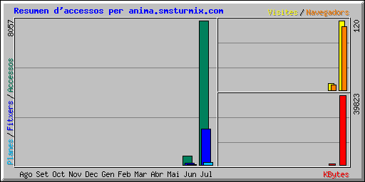

| Resum per mesos | ||||||||||
|---|---|---|---|---|---|---|---|---|---|---|
| Mes | Mitjana diària | Totals del mes | ||||||||
| Accessos | Fitxers | Planes | Visites | Navegadors | KBytes | Visites | Planes | Fitxers | Accessos | |
| Jul 2007 | 473 | 117 | 8 | 7 | 109 | 39823 | 120 | 145 | 2001 | 8057 |
| Jun 2007 | 64 | 10 | 2 | 1 | 9 | 511 | 12 | 17 | 87 | 515 |
| Totals | 40334 | 132 | 162 | 2088 | 8572 | |||||
| Generated by Webalizer Version 2.01 |